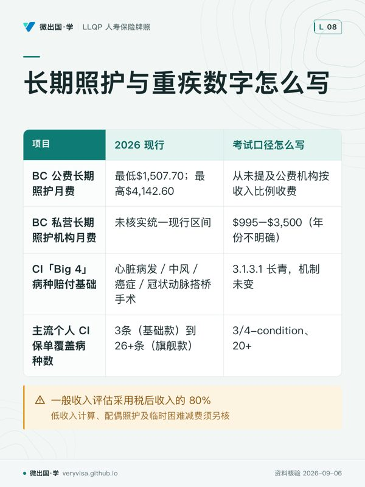

🃏 Flashcards · 3 闪卡 · 3 张 🖼 Slides · 2 幻灯 · 2 页 ✍️ Questions · 8 刷题 · 8 道
意外与疾病 Accident & Sickness P1 必拿分 P1 Must score
ZH EN ZH + EN
先看这一章怎么考 First, how this chapter is tested
情景定性题：给一段临床突发症状或初步诊断（如短暂性脑缺血发作或早期病变），考你能否识别理赔取决于合同条款的严格定义，而非日常病名。 Scenario qualification questions: Presenting acute clinical symptoms or an initial diagnosis (such as a transient ischemic attack or an early-stage lesion), testing whether you can recognize that claim eligibility depends strictly on contractual definitions rather than everyday disease names. 时间闸门辨析题：在投保生效后不久确诊、或在确诊后短期内身故的场景中，测试合格期（qualification period）与存活期（survival period）的起算时点与法律后果。 Time-gate discrimination questions: In scenarios where a diagnosis occurs shortly after policy inception or death occurs shortly after diagnosis, testing the starting points and legal consequences of the qualification period versus the survival period. 给付计算与顺延题：给出重疾险的部分给付比例（如35%），或长期护理险的每日给付上限、实际每日开销与总保障池，考你算实际赔付额或资金池可用天数的顺延。 Benefit calculation and carry-forward questions: Providing a partial benefit percentage for critical illness (such as 35%), or a daily maximum benefit, actual daily expenses, and total benefit pool for long-term care, testing your ability to calculate the actual claim payout or the extended days available from the carried-forward benefit pool. 最常丢分的陷阱（看到题干信号就警觉） Traps that cost the most marks (watch for the signal in the stem)
合格期与存活期混淆 Confusing qualification period with survival period 题干出现政策刚生效/复效后不久查出症状，或出现确诊后第N天不幸身故的时间线。 The question stem presents symptoms discovered shortly after policy issue or reinstatement, or outlines a timeline where the insured dies on day N following diagnosis. 凭日常病名直接判赔 Determining claims based solely on colloquial disease names 题干强调症状在短时间内完全消退、影像无永久损伤，或专门写出医生的具体临床诊断缩写。 The question stem highlights symptoms resolving completely within a short time, imaging showing no permanent impairment, or specifies the physician's precise clinical diagnostic abbreviation. 重疾险一概全额或终身持续 Assuming critical illness always pays in full or continues indefinitely 题干明确提到某项条件按固定百分比（如35%）给付，或提到客户几年前已领取过100%全额重疾保险金且未加购附加险。 The question stem specifies a condition paying a fixed percentage (such as 35%), or notes that the client received a 100% full critical illness payout years earlier without purchasing a rider. 本章考点页：导图、要点表、7 道带逐项解析的练习 →
核实日期：2026-09-04｜本页现行数字与市场信息的出处：CLHIA CI 定义基准（Canadian Life and Health Ins… ）、RBC／Canada Protection Plan／Manulife／Sun Life 四家 CI 产品（RBC Insurance ～05）、BC 长期照护公费费率（BC 省政府 、07）、加拿大个人 LTC 市场退出史三条（Insurance Portal（加拿大保险行业媒体） ～10）、Sun Retirement Health Assist 产品细节（Sun Life ）。附加险形态的重疾给付（dread disease rider）与独立重疾险的区分，本页只作简述，完整对照见 life-ch05-riders 第二节与术语表（的原始记录也在那一页）。
复核周期：2027-09-01；BC 公费长期照护月费两条（BC 省政府 、07）复核周期 2027-04-01（按收入核定，逐年可能微调）。
0. 这一章解决什么问题
你要考的是 意外与疾病保险模块（Accident and Sickness Insurance） ，本篇对应 CISRO 能力组件 c2「分析可用产品」，占本模块 30% ——与 ch02 讲的伤残保险（DI）同属一个组件，但保护的是完全不同的两类需求：DI 补的是「收入没了」，本篇讲的重大疾病保险（critical illness insurance，CI）与长期护理保险（long-term care insurance，LTC）补的是「资产被吃掉」。这一篇讲的不是「CI 和 LTC 分别是什么」的定义记忆题，而是同一个道理在两个产品上各自的表现形式 ：赔不赔、赔多少、赔给谁，几乎全部取决于合同条款里那几行不起眼的定义文字——诊断出的病够不够严重、活过的天数够不够长、丧失的生活能力够不够多。
这一篇帮你做到三件事：① 给一个具体的诊断场景（比如「短暂性脑缺血发作」），判断它够不够得上合同定义的「中风」；② 算出 CI 的分级比例给付与 LTC 的「每日限额 × 天数」两种计算模型；③ 说清楚 2026 年的加拿大市场里，CI 有多种已核实的产品设计，个人 LTC 的现行选择也须逐家核对——这条判断本身就是这一章最值钱的「现行政策」信息。
一、制度设计与底层逻辑 本节回答 This section answers 解释CI与LTC为何保护资产及双时间闸门如何拦截风险 Explaining why CI and LTC protect assets and how dual time gates manage risk exposure. 本章考题 1 Question 1
1. 它们补的不是收入，是「资产会被吃掉」这件事
伤残险（ch02）解决的问题是「这个人还能不能挣钱」，触发条件是一种需要反复核定的状态。CI 与 LTC 解决的是另一个问题：这个人挣不挣得到钱先不管，眼下这件事本身就会吃光他的积蓄。一场癌症治疗即使康复良好、很快复工，也可能带来传统医疗保险不覆盖的替代疗法费用、房屋无障碍改造、甚至只是「想请几个月假去做心理调适」这种非医疗性支出；一次中风留下认知障碍，即使不致命，也可能需要几十年的照护费用，而这笔钱与「这个人还能不能上班」完全是两件事。考试口径把这条逻辑说得很直接：这两种产品保护的都是资产 ，不是收入 。
由此产生本章第一条底层逻辑：CI 通常定额给付；LTC 可按费用报销，也可定额给付，资格取决于护理依赖等合同条件 。CI 一旦确诊达标、活过等待期，保险公司不会问你拿这笔钱去还房贷、去度假散心还是去请护工——款项用途通常由有权领取保险金的人安排，收款人须核所有权及合同。LTC 则相反：给付与「丧失日常生活自理能力」这一件事绑定，不管你原来是不是还在挣钱。这也是为什么考试口径反复强调「LTC 不是伤残险」——两者看起来都是「身体出事后给钱」，但判定的问题完全不是同一个问题。
2. 保险公司与投保人在博弈什么：定义的精确度
CI 与 LTC 的核心矛盾不在保额，在定义精确到什么程度 。一份保单覆盖的病种越多、每种病的定义门槛越低，出险概率越高，保费自然越贵；反过来，便宜的保单往往靠收窄定义 来控制风险，而不是明说「这类情况不赔」。这就带来了这两类产品最容易被投保人误解的一点：核赔须依据合同定义及证据，不能仅凭日常病名判断；没有全市场统计，不能推断各类拒赔原因的占比 。
考试口径引述的历史拒赔样本强调疾病定义的重要性；本页未取得原始研究的年份、样本与分母，不把其中的百分比当作 2026 年现行拒赔率。学习时保留「诊断名称与合同定义可能不同」这一机制，实务核客户保单及医学证据。
3. 法律后果：合格期与存活期各挡一类风险，缺一不可
图：定义决定赔不赔——诊断、存活期与生活能力决定给付
CI 合同里有两道时间闸门，很多学员会把它们记混，但它们各自挡的风险完全不同：
两道闸门的设计初衷都写在考试口径里：CI 保险的立意是「给活下来的人一笔钱去重建生活」，不是「给身故的人一笔变相的人寿保险金」——这也是为什么如果被保险人在存活期结束之后 、理赔核准之前 身故，保险金仍会照付给遗产或受益人；但如果死在存活期结束之前 ，则视为未满足存活期条件，这笔 CI 给付根本不会发生（当然，人寿险的身故给付是另一回事，两者互不影响）。
LTC 也要区分保障开始条件与失能后的等待期。考试口径列举免赔期（elimination period，0–90 天） 的设计示例——这是被保险人自己选的一段「自费扛过去」的时间，越短保费越高，逻辑与伤残险的等待期相同（谁扛这段时间的成本，谁的保费就低）。
节末检索小测 · 先别往回翻，凭记忆作答 Quick recall check: answer from memory before scrolling back
Elena, a self-employed graphic designer with ample passive investment income, is comparing disability insurance with critical illness (CI) insurance. Her advisor explains the core structural purpose of CI coverage. Which statement accurately describes how a standard CI policy operates if Elena suffers a covered condition?
拥有充足被动投资收入的自雇平面设计师 Elena 正在比较伤残保险与重大疾病保险（CI）。她的顾问向她解释了 CI 保障的核心制度设计目的。如果 Elena 患上受保疾病，下列哪项陈述准确描述了标准 CI 保单的运作方式？
a It replaces a monthly percentage of her lost earned income for as long as she remains unable to perform her regular occupation. ✗ 混淆了伤残险与重疾险（底层定位陷阱）。按月替代工作收入并持续核定工作能力是伤残险（disability insurance）的机制，而非重大疾病保险（critical illness insurance, CI）。 Incorrect. Confusing disability insurance with critical illness insurance (underlying purpose trap). Replacing monthly earned income based on ongoing evaluations of occupational ability is the mechanism of disability insurance, not critical illness (CI) insurance.
b It reimburses only documented medical and hospital receipts that are excluded from the provincial health plan. ✗ 误把重疾险当成医疗费用报销险（给付形态陷阱）。CI 通常采用一次性定额给付，不要求客户凭医疗或住院单据报销。 Incorrect. Treating critical illness insurance as a medical expense reimbursement policy (benefit structure trap). CI insurance typically pays a predetermined lump sum and does not require receipts or medical invoices for reimbursement.
c It pays a lump sum once she meets the policy definition and survival period, and the insurer does not restrict how she spends it. ✓ 正确。重大疾病保险（critical illness insurance, CI）保护的是资产不被大病吃掉而非替代收入；一旦确诊符合合同定义且活过存活期（survival period），通常一次性定额给付，保险公司不限制款项用途。 Correct. Critical illness (CI) insurance is designed to protect assets from being depleted by a serious illness rather than replacing lost income; once a diagnosis satisfies the contract definition and the survival period is met, it pays a lump-sum benefit with no restrictions imposed by the insurer on how the money is spent.
d It pays a daily allowance directly to a nursing facility once she is unable to perform at least two activities of daily living. ✗ 混淆了重疾险与长期护理险（触发条件陷阱）。以丧失两项以上日常生活活动能力（activities of daily living, ADLs）为触发条件并按日计算给付的是长期护理险（long-term care insurance, LTC）。 Incorrect. Confusing critical illness insurance with long-term care insurance (benefit trigger trap). Triggering benefits based on the inability to perform at least two activities of daily living (ADLs) and paying a daily allowance is the mechanism of long-term care (LTC) insurance.
看答案与每个选项的解析 Show the answer and why each option is right or wrong 答案 Answer ：c
二、2026 现行政策与数字 本节回答 This section answers 对比重疾定义基准、LTC等待期与BC照护费用的考场与现行口径 Comparing critical illness definition benchmarks, LTC waiting periods, and BC facility care costs between exam standards and current practice. 本章考题 2 Question 2
1. 考场与现行对照表之一：CLHIA 重疾定义基准——现行 2024 Final，采用与否各保司自愿
2. 考场与现行对照表之二：考试口径的等待期区间 vs Sun RHA 的实际产品参数
考试口径 3.3.3 给出 LTC 免赔期（elimination period）的区间是 0–90 天，这个区间描述的是「这类产品理论上的设计空间」，而不是某一款现行产品的实际参数。Sun Retirement Health Assist（Sun RHA）的官方顾问页及 Client Guide 第 4–6 页写明：等待期为 365 或 730 天，但必须区分「保单开始」与「保障生效日」，也不能把这款产品视为全市场唯一选择（Sun Life 、Sun Life ）。
✕
365/730 天从保障生效后的持续失能期间计算
保障生效日取保单起始满 5 年 与 65 岁生日后紧接的保单周年日 中较晚者；生日与周年日重合时按顾问页例外在生日生效。失能早于保障生效且持续的，等待期从保障生效日才开始；之后失能的，从符合失能定义时开始。理赔资格还包括认知恶化需持续监督、至少两项 ADL 需实质协助，或洗澡与转移均需近身守护等分支。先判生效日，再判依赖状态与持续等待期，不能从购买日直接加 365/730 天（Sun Life 、Sun Life ）。
3. 政府/行业侧现行数字快照
✕
历史停售信息不能代替现行投保资料
部分旧产品停售信息仅有行业媒体线索，本文不把未取得保险人公告的年份和退出理由作为已核实事实。已取得官方资料的 Sun RHA 可用于比较 LTC 生效及给付条件，但样本不代表全市场只有这一款。
节末检索小测 · 先别往回翻，凭记忆作答 Quick recall check: answer from memory before scrolling back
An advisor in British Columbia is helping a retiring couple estimate potential long-term care facility expenses in 2026 and understand how the exam figures compare with current provincial rules. Which statement correctly reflects the dual standard documented for BC facility costs?
一位 BC 省顾问正在帮助一对即将退休的夫妻估算 2026 年潜在的长期照护机构费用，并理解考试口径的数字与现行省级规则的差异。下列哪项陈述正确反映了 BC 省机构照护费用的双口径记录？
a The exam lists unsubsidized private rates of $995–$3,500 a month; in 2026 BC public care generally assesses 80% of after-tax income, from $1,507.70 to $4,142.60. ✓ 正确。考试口径（exam）仅列出未受补贴私营机构的旧月费区间（$995–$3,500/月），而 2026 年现行 BC 公费长期照护（publicly subsidized long-term care）一般按税后收入的 80% 核定，标准月费最低为 $1,507.70、最高为 $4,142.60（低收入或困难减免另核）。 Correct. The exam only lists an outdated monthly fee range for unsubsidized private facilities ($995 to $3,500 per month), whereas in 2026 BC publicly subsidized long-term care is generally assessed at 80% of after-tax income, with standard monthly client rates ranging from a minimum of $1,507.70 to a maximum of $4,142.60 (subject to separate relief for low income or hardship).
b Both the exam and 2026 BC regulations mandate a flat fee of $1,507.70 per month for every resident regardless of income or facility type. ✗ 混淆了最低标准与统一收费（绝对化陷阱）。$1,507.70 只是 2026 年 BC 公费机构一般收入评估的标准最低额，既非人人相同的固定月费，也不是考试口径引用的数字。 Incorrect. Confusing a baseline assessment rate with a flat mandatory fee (absolutism trap). The figure $1,507.70 is merely the standard minimum monthly rate under general income testing for BC public care in 2026, not a flat fee charged to every resident, nor is it cited in the exam materials.
c The exam states that BC public facilities charge 80% of pre-tax income, while private facilities are capped by law at $4,142.60 per month. ✗ 颠倒了考试口径与现行公私营规则（口径错位陷阱）。考试口径根本未提及公费按收入比例收费的机制，且 $4,142.60 是公费机构的标准月费上限而非私营机构法定上限。 Incorrect. Misrepresenting exam figures and public versus private facility rules (misalignment trap). The exam does not mention income-tested public fee structures, and $4,142.60 is the standard ceiling for public care, not a statutory cap on private facility rates.
d The exam and current BC policy both require clients to exhaust a 365-day elimination period before any public or private facility rate applies. ✗ 把商业保险产品的等待期混入政府公费机构收费规则（概念嫁接陷阱）。365 天是个别现行商业长期护理产品的等待期选项，与公费照护月费核定无关。 Incorrect. Grafting commercial insurance waiting periods onto government subsidized care rules (concept grafting trap). A 365-day period is a waiting period option in specific current private LTC insurance policies, completely unrelated to provincial public care fee assessments.
看答案与每个选项的解析 Show the answer and why each option is right or wrong 答案 Answer ：a
三、实务流程 本节回答 This section answers 梳理核保、理赔结算及保费豁免与COLA抗通胀附加险 Reviewing underwriting, claim settlement, premium waivers, and COLA inflation-protection riders.
1. 售前：CI 的核保比 DI 更看家族史，LTC 的核保年龄窗口很窄
CI 核保可能询问申请人及亲属健康史，具体问卷和承保结果由保险人判断；不能由病种名称推断某个家庭一定会被加费。考试口径把 45–55 岁作为规划示例，也描述较高年龄投保的限制，但它不是统一市场年龄上限。Sun RHA 官方 Client Guide 给出的投保年龄为 45–71 岁；申请年龄、保障生效日与等待期是三件事，65 岁后能否申请须看所选产品，不能直接判为无产品可买。
2. 投保时：合格期与存活期不能混着记
代理人向客户解释 CI 保单时，最容易讲串的就是「合格期」与「存活期」这两个词——它们发生的时间点不同（生效后 vs 确诊后），挡的风险也不同（逆选择 vs 确认存活），第一节的表格是这一步的核心工具。实务上建议按「先看保单是不是刚生效、再看诊断是不是刚发生」这个顺序去定位客户实际处在哪个闸门里。
3. 理赔时：CI 走「一次性用尽」，LTC 走「按天核销」
CI 全额给付后是否终止、早期部分给付是否减少主保额，以及再次给付条件，必须逐项看合同。Sun Life 就把全额疾病与早期疾病给付分列，不能把任何一次小额理赔都当作合同终止。LTC 的报销型以合资格实际支出及限额算；定额型按约定金额算，并不因名为 indemnity 就必须由保险人直付机构。照护地点改变是否影响资格、额度或付款方式，要按合同办理变更及持续证明。
4. 保单存续期：LTC 的保费豁免与 COLA 附加险
LTC 保费通常终身缴纳，但在理赔期间会自动豁免；部分保单提供定期缴费选项（如 20 年缴清）。通胀是 LTC 最大的长期风险——考试口径给出的应对工具是 COLA（cost-of-living adjustment）附加险 ，在考试口径示例中按年 2%–3% 调高上限；实际比率、起算日、复利及是否内含看合同，代理人在销售时需要提醒客户：不加购 COLA 的保单，给付上限会被几十年后的通胀吃掉相当一部分实际购买力。
节末检索小测 · 先别往回翻，凭记忆作答 Quick recall check: answer from memory before scrolling back
Noah, age 52, is purchasing a long-term care (LTC) insurance policy and worries that decades of inflation will erode the purchasing power of his daily benefit by the time he needs care at age 80. Which policy feature specifically addresses this concern, and how are his premiums treated while he is receiving LTC benefits?
52 岁的 Noah 正在购买一份长期护理（LTC）保险保单，他担心几十年的通货膨胀会在他 80 岁需要照护时侵蚀每日给付额的购买力。哪项保单特性专门解决这一担忧？在他领取 LTC 给付期间，他的保费如何处理？
a A return of premium (ROP) rider increases the daily limit by 2% to 3% annually, and premiums must continue to be paid during a claim. ✗ 混淆了保费返还附加险与抗通胀附加险（附加险功能陷阱）。保费返还附加险（return of premium rider, ROP）用于无理赔时退还保费，且 LTC 在理赔期间会自动豁免保费。 Incorrect. Confusing a return of premium rider with an inflation protection rider (rider function trap). A return of premium (ROP) rider refunds premiums when no claims occur, and LTC policies automatically waive premiums while benefits are being paid.
b A cost-of-living adjustment (COLA) rider raises the benefit limit, such as 2% to 3% a year in exam examples, and premiums are waived during a claim. ✓ 正确。生活费用调整附加险（cost-of-living adjustment, COLA）专门用于抵御长期通胀（考试口径示例按年 2%–3% 调高给付上限），且长期护理险在理赔给付期间会自动豁免保费（waiver of premium）。 Correct. A cost-of-living adjustment (COLA) rider is designed specifically to counter long-term inflation (with exam examples showing annual cap increases of 2% to 3%), and long-term care policies automatically waive ongoing premiums while benefits are being received.
c A second event rider doubles the daily maximum after five years, and premiums are deducted directly from the daily benefit payments. ✗ 将重疾险附加险混入长期护理险（跨险种混淆陷阱）。二次理赔附加险（second event rider）属于重疾险概念，且 LTC 理赔期保费是豁免而非从给付中扣减。 Incorrect. Grafting a critical illness rider onto long-term care insurance (cross-product confusion trap). A second event rider is a critical illness feature, and premiums during LTC claims are waived rather than deducted from daily payouts.
d A qualification period clause indexes the benefit to inflation, and premiums are waived only if the policy was paid up within 20 years. ✗ 混淆了合格期与通胀调整（术语混淆陷阱）。合格期（qualification period）是重疾险生效后的等待期，与通胀调整无关；终身缴费的 LTC 保单在理赔期间同样自动豁免保费。 Incorrect. Confusing a qualification period with inflation adjustments (terminology confusion trap). A qualification period is an initial waiting period following policy inception in critical illness coverage, having nothing to do with inflation adjustments; LTC policies automatically waive premiums during claim periods.
看答案与每个选项的解析 Show the answer and why each option is right or wrong 答案 Answer ：b
四、2026 市场：谁在卖，产品叫什么 本节回答 This section answers 区分免体检简化核保与保证承保，掌握产品分档与附加险 Distinguishing no-medical simplified issue from guaranteed issue, and understanding product tiers and riders.
以下为已取得官方页面的产品示例，未取得原文的规格不作为现行事实。样本没有覆盖全市场，也没有比较报价，不能据此断言竞争程度或价格排名。
RBC Insurance （rbcinsurance.com，RBC Insurance ）——并列两条产品线：Critical Illness Recovery Plan （30 种以上疾病与状况，保额 $25,000 至 $200 万，存活期 30 天，可选 Return of Premium on Death）与更基础的 Critical Illness Insurance Plan （只覆盖癌症、心脏病发、中风三条件，保额 $10,000–$75,000）。它解决考试口径里的哪个概念：这两条产品线正是考试口径 3.1.2「三/四条件基础款」与「comprehensive 20+ 综合款」两个分级在同一家公司货架上的并存实例。
Canada Protection Plan （cpp.ca，Canada Protection Plan ）——面向次标准体与免体检市场的专科保司，四条产品线（心脏保障 / 癌症保障 / 心脏与癌症并保 / 心脏或癌症择一保），只需 6–8 个健康声明问题，无需体检。它解决考试口径里的哪个概念：考试口径 3.1.2 提到的「guaranteed issue（保证承保）CI，保费更贵、保额通常限于 $100,000 以下」——这些产品属于简化核保示例；健康问题的答案仍会影响资格，免体检不等于 guaranteed issue。
Manulife ——官网渲染正文已核实（Manulife Canada ）：CoverMe 直销重疾险只保 5 种（life-threatening cancer、心脏病发、中风、冠状动脉搭桥、主动脉手术，后四种适用 30 天等待期），保障到 75 岁，可选附加「75 岁前未理赔退还最高 100% 保费」。顾问渠道其他系列的病种数与档名未取得保险人原文，此处不列精确数值，也不能据产品名单直接推算价格。
Sun Life ——官网渲染正文已核实（Sun Life（经 HelloSafe 2026 版评… ）：Sun Critical Illness Insurance 覆盖成人 26 种全额给付疾病、8 种早期给付疾病，儿童另加 5 种（保至 24 岁）；保额成人 $25,000–$4,000,000、儿童 $25,000–$1,000,000；投保年龄 18–65；计划形态 T10/T75/T100；可选附加含 Return of premium on death、Return of premium on cancellation or expiry、Total disability waiver、Long term care conversion option。存活期及 ROP 阶梯须取具体条款，未核实的比例不在此列示。它解决考试口径里的哪个概念：T10/T75/T100 三种计划形态与多种可选附加险，对应考试口径 3.1.4.1 讲的三种 ROP（身故／退保／满期）在现行产品上的具体落地。
iA Financial Group （相关产品与机制已在 life-ch05-riders 第二节记录，此处不重复）——2025-11-24 上市的独立重疾险产品 Transition 6 把「保证可保利益（GIB）」这套原本用在人寿保单上的机制搬到了重疾险产品上，是「机制从人寿产品扩散到重疾险产品」的现行实例（iA Financial Group（iA Connec… ）。
部分旧产品停售信息仅有行业媒体线索，本文不把未取得保险人公告的年份和退出理由作为已核实事实。已取得官方资料的 Sun RHA 可用于比较 LTC 生效及给付条件，但样本不代表全市场只有这一款。
本次检索已确认在售的个人 LTC 类产品为 Sun Retirement Health Assist（Sun RHA） 。其给付按周计算、按月支付，等待期及保障生效日已回官方细则核实（Sun Life 、Sun Life ）。已核实的停售史说明传统产品选择收缩，但本次没有穷尽所有保险公司，不能推出全国只剩一家公司的一款产品。客户需求分析应分别说明照护资金缺口、可核实产品及其保障条件。
Empire Life ——官网确认现行两档：CI Protect（覆盖癌症、心脏病发、中风、冠状动脉搭桥四种最常见重疾，保至 75 岁，含 $1,000 身故给付）与 CI Protect Plus（25 种重疾）（The Empire Life Insurance Co… ）。Desjardins ——官网确认产品名 Assurance maladies graves（26 种重大疾病/手术，早期检出癌症按 15% 给付、其余癌症按 1% 给付，合格期 90 天，保额 $10,000–$4,000,000）（Desjardins Sécurité financière ）。BMO Insurance ——官方页列出 Living Benefit 的 10 年、20 年、至 75 岁及至 100 岁计划，覆盖 25 种条件；该页未把它称作 Enhanced 档，具体病种定义仍看合同（BMO Insurance ）。
节末检索小测 · 先别往回翻，凭记忆作答 Quick recall check: answer from memory before scrolling back
An advisor is reviewing a critical illness (CI) insurance application that requires no medical examination and asks only six to eight health declaration questions, where the applicant's answers still determine eligibility. How should the advisor classify this underwriting approach compared with guaranteed issue CI?
一位顾问正在审阅一份无需体检、仅需回答 6 至 8 个健康声明问题的重大疾病（CI）保险投保单，申请人的回答仍决定其承保资格。与保证承保（guaranteed issue）CI 相比，顾问应如何归类这种核保方式？
a It is guaranteed issue CI because any policy issued without a physical medical examination automatically guarantees acceptance. ✗ 把免体检等同于保证承保（核保概念混淆陷阱）。只要健康声明问卷的答案仍会影响承保资格并可能导致拒保，就不是保证承保（guaranteed issue）。 Incorrect. Equating no-medical-exam underwriting with guaranteed issue (underwriting concept confusion trap). As long as health declaration answers determine eligibility and can lead to a decline, the coverage is not guaranteed issue.
b It is simplified underwriting, because the answers still affect eligibility; guaranteed issue accepts anyone meeting plan eligibility rules. ✓ 正确。仅凭 6–8 个健康问题且无需体检、但答案仍影响资格的产品属于简化核保（simplified underwriting）；真正的保证承保（guaranteed issue CI）在符合计划资格时保证承保（通常保费更贵、保额限于 $100,000 以下）。 Correct. A policy requiring no medical exam and asking only 6 to 8 health questions whose answers affect eligibility is classified as simplified underwriting; genuine guaranteed issue CI guarantees coverage if program criteria are met, typically featuring higher premiums and face amounts capped under $100,000.
c It is post-claim underwriting where medical evidence is only examined after the insured files a critical illness claim. ✗ 捏造了理赔后核保分类（概念虚构陷阱）。投保时的 6–8 个健康问题已在售前筛选资格，并非等到理赔时才做核保。 Incorrect. Fabricating a post-claim underwriting category (conceptual fabrication trap). The 6 to 8 health questions screen eligibility prior to policy issue rather than deferring risk underwriting until a claim is filed.
d It is group conversion underwriting that applies only when an employee leaves an employer plan before age 65. ✗ 混淆了次标准体/免体检个人产品与团体转换（渠道混淆陷阱）。这类简短问卷免体检产品面向个人次标准体与免体检市场，并非仅限离职团体转换。 Incorrect. Confusing non-medical individual products with group conversions (channel confusion trap). Short-questionnaire non-medical policies are offered in the individual substandard and simplified market, and are not restricted to departing group plan members.
看答案与每个选项的解析 Show the answer and why each option is right or wrong 答案 Answer ：b
五、历史变革 本节回答 This section answers 说明CI引入年代、定义基准三轮演进与照护费双轨史 Explaining the introduction era of CI, the three-round evolution of benchmark definitions, and the dual-track history of care costs.
其一，CI 保险本身是个「年轻」产品，1990 年代中期才在加拿大出现。 考试口径明确指出 CI 作为独立合同的形式是「mid-1990s」引入加拿大市场的——放在保险产品的历史尺度上，CI 比伤残险、人寿险都年轻得多，这也是考试口径那句「作为相对较新的产品，未来保障范围还会继续演变」的由来。
其二，CI 定义基准经历了三轮行业协调：2013 → 2018 → 2024。 CLHIA 推动的「重疾定义标准化基准」并非从一开始就存在，而是分三个版本逐步细化（Canadian Life and Health Ins… ）。这条历史本身回答了一个常见客户疑问——「为什么不同保司对同一种病的定义描述得不太一样」：因为采用哪个版本的基准、要不要采用，对每家保司都是自愿的，行业协调的作用是「降低理解成本」，不是「强制统一条款」。
其三，产品退出、新售与旧保单服务是三种状态。媒体报道可帮助寻找保险人公告，但没有公告及适用产品版本，不能把退出日期、原因或市场规模写成定论。对客户更重要的是取得当前可申请产品的文件，并继续按已有合同核续保和理赔权利。
其四，长期照护价格须区分公费按收入评估与私人机构报价。2026 公费标准费率已有 BC 政策手册；考试口径旧表及二手私人价格区间不能直接当作现行个案账单。先确认床位类型、收入评估和额外服务，再估资金缺口。
节末检索小测 · 先别往回翻，凭记忆作答 Quick recall check: answer from memory before scrolling back
A client notices that two insurers use slightly different wording to define a covered heart attack in their critical illness (CI) contracts and asks why definitions are not identical across the industry. Based on the historical evolution of CI insurance in Canada, what is the accurate explanation?
一位客户注意到两家保险公司在其重大疾病（CI）合同中对受保心脏病发作的定义措辞略有不同，并询问为什么全行业的定义不是完全一致的。根据加拿大 CI 保险的历史演变，准确的解释是什么？
a CI only arrived in Canada in the mid-1990s, and industry benchmark definitions were revised in 2013, 2018 and 2024 but remain voluntary to adopt. ✓ 正确。重大疾病保险（critical illness insurance, CI）于 1990 年代中期（mid-1990s）才引入加拿大，虽然行业定义基准（CLHIA CI Benchmark Definitions）经历了 2013、2018、2024 三轮演进，但各保司是否采用及采用哪个版本完全自愿。 Correct. Critical illness (CI) insurance was introduced to Canada in the mid-1990s, and while industry benchmark definitions (CLHIA CI Benchmark Definitions) evolved across 2013, 2018, and 2024 versions, adoption of any version by insurance companies is entirely voluntary.
b Provincial regulators prohibited standardized definitions in 2024 to force insurers to compete solely on medical terminology. ✗ 编造了监管禁止标准化定义的说法（法规虚构陷阱）。行业协调的目标正是降低理解成本，只是采用与否属保司自愿而非监管禁止。 Incorrect. Fabricating a regulatory ban on standardized definitions (regulatory fabrication trap). Industry coordination aims to reduce consumer confusion; adoption is simply voluntary for insurers rather than prohibited by regulators.
c All policies issued after 2024 are legally forced to use identical wording, so the client must be looking at a pre-1990 contract. ✗ 误以为 2024 版基准具有强制法律效力且记错引入年代（强制化与年代陷阱）。CI 在 1990 年代中期才在加拿大出现，且 2024 版基准仍是自愿采用。 Incorrect. Assuming the 2024 benchmarks are legally mandatory and misremembering the era of introduction (mandate and timeline trap). CI insurance was introduced to Canada in the mid-1990s, and the 2024 benchmarks remain voluntary.
d Insurers are only required to standardize definitions for long-term care policies, while critical illness definitions have never had an industry benchmark. ✗ 颠倒了行业基准的存在事实（事实反转陷阱）。行业层面恰恰针对重疾险发布了 2013、2018 和 2024 三版定义基准。 Incorrect. Inverting the reality of industry benchmarks (factual reversal trap). The industry has specifically published benchmark definition sets in 2013, 2018, and 2024 for critical illness insurance.
看答案与每个选项的解析 Show the answer and why each option is right or wrong 答案 Answer ：a
六、案例：三个最容易在柜台上说错、也最容易在考场上丢分的场景 本节回答 This section answers 剖析小中风拒赔、全额结案无二次附加险与LTC地点切换 Analyzing mini-stroke claim denial, full claim termination without a second rider, and LTC care venue transitions. 本章考题 3 Question 3
案例 A：「小中风」为什么不赔（示例）
素里的会计师 Priya，45 岁，持有一份 10-condition 的 CI 保单，覆盖中风（stroke）。一天她突然感到一侧手臂麻木、说话含糊，送医后被诊断为短暂性脑缺血发作（transient ischemic attack, TIA） ，俗称「小中风」——症状在 40 分钟内完全消退，脑部影像未见永久性损伤迹象。Priya 出院后向保险公司提交理赔申请。
适用规则 ：本例假定合同的中风条款明确排除 TIA。核赔时应提交诊断、影像及神经系统检查资料，并逐项对照条款要求的持续时间与缺损证据；不能拿民间「小中风」称呼替代合同定义，也不在此给出未经核实的统一 24 小时门槛。
结果 ：保险公司拒赔，理由不是「你没生病」，而是「你的诊断不符合本合同对『中风』一词的定义」 。Priya 的主治医生确实在病历上写了"TIA"（短暂性脑缺血发作），而不是"stroke"（中风）——这个诊断名称上的区别，直接决定了这笔理赔的成败。
常见错法 ：仅凭「小中风」称呼判断赔付。此例的拒赔结论来自明示的 TIA 除外假设；换一份合同须重新核条款，不能由症状自行消退直接替患者作临床诊断。
案例 B：CI 理赔用尽后，没有二次理赔附加险会怎样（示例）
考试口径原有 Sylvia 案例的本地化版本：列治文的退休教师 Sylvia，2011 年确诊乳腺癌，成功获得 CI 保单 $100,000 全额理赔。她的保单没有加购 second event rider 。2013 年她又经历了一次心脏病发作。
适用规则 ：本例假定合同在全额重疾给付后终止，因此后来的心脏病不在原合同下赔付。早期部分给付是否影响主保障、二次给付是否内含或需附加，另依各自条款；不能把本例推广到任何一笔 CI 赔款。
结果 ：Sylvia 无法就 2013 年的心脏病发作获得任何 CI 给付，因为合同已经在 2011 年理赔时终止。
常见错法 ：把已全额结案的本例保单当作持续医疗报销计划。即使另有二次给付安排，后一次疾病仍须满足病种、两次事件间隔与存活期等条件，不能仅凭加购附加险就保证一定再赔。
案例 C：ADL 判定与给付模式的切换（示例）
本拿比退休工程师 Marco，71 岁，持有一份假设的 LTC 合同：等待期 90 天、每日上限 $200、总额另有封顶，居家阶段按合资格费用报销，入住认可机构后按约定日额给付。合同明确要求持续依赖及相关证明。中风后，他因移位与如厕需要实质协助；假定满足合同定义并经过等待期后开始报销。三个月后入机构，代理人提交地点变更及持续资格资料，按本例条文变更付款方式。
适用规则 ：以上两种付款方式是本例的约定。定额给付不等于直付机构；实际产品也可能不论居家或机构均向权利人定额给付。除 ADL 或认知条件，还须核保障生效日、持续依赖时间、认可服务及除外责任。
结果 ：Marco 的日给付上限全程都是 $200，总保障额按「$200 × 天数」计算直至合同约定的总封顶用尽；给付模式 变了，给付标准 没变。
常见错法 ：以为搬入机构就自动延续原金额、无需报告。实际须依条款通知并提供持续资格证明。按报销额扣减总资金池的合同，未花完的部分可能延长可用时间；按固定最长天数设计的合同未必如此，不能预设所有余额均可顺延。
节末检索小测 · 先别往回翻，凭记忆作答 Quick recall check: answer from memory before scrolling back
Arthur, age 74, receives home-based long-term care benefits under a policy with a $180 daily maximum (reimbursement at home, indemnity in a recognized facility, subject to an overall policy maximum). After four months at home, he moves into a recognized care facility. His advisor submits the change of care location and proof of ongoing dependency. What happens to Arthur's benefit structure?
74 岁的 Arthur 根据一份每日上限为 $180（居家阶段按报销、入住认可机构按定额给付，受总保额封顶限制）的保单领取居家长期护理给付。在家照护四个月后，他搬入一家认可的照护机构。他的顾问提交了照护地点变更及持续依赖证明。Arthur 的给付结构会发生什么变化？
a His $180 daily standard stays until the overall maximum is used up, but payment switches from expense reimbursement to fixed daily indemnity. ✓ 正确。按合同办妥地点变更与持续资格证明后，给付模式从居家报销（reimbursement model）切换为机构定额给付（indemnity model），但每日给付标准仍维持 $180，按日累计直至总保障额封顶用尽。 Correct. Upon completing the required notice of venue change and providing proof of ongoing eligibility under the contract, the payment method switches from home care reimbursement to facility care indemnity, while maintaining the $180 daily maximum until the overall maximum benefit pool is exhausted.
b His policy terminates upon leaving home care because a single LTC contract cannot cover both home care and facility care. ✗ 误以为照护地点变更会导致合同终止（全额结案泛化陷阱）。LTC 保单通常同时涵盖居家与机构照护，只需按合同办理变更及持续证明。 Incorrect. Assuming that changing the care venue terminates the policy (generalized termination trap). LTC policies typically cover both home care and facility care, requiring only contractual notification and ongoing proof of disability.
c He must satisfy a new 90-day elimination period from scratch upon entering the facility before any daily indemnity can begin. ✗ 误以为转换照护地点需重新计算免赔期（等待期重置陷阱）。Arthur 已经在居家阶段满足了等待期并持续处于失能依赖状态，无需重新经历免赔期。 Incorrect. Believing that transferring care venues requires satisfying a new elimination period (elimination period reset trap). Arthur already satisfied the elimination period during the home care phase and remains continuously dependent, requiring no new waiting period.
d The insurer must automatically double his daily limit to match private facility rates without regard to the contract's $180 cap. ✗ 误以为入住机构会自动突破合同日限额（保额幻想陷阱）。无论是报销型还是定额型，给付标准都受合同约定的 $180 每日上限（daily maximum benefit）约束。 Incorrect. Assuming that moving into a facility automatically overrides the contractual daily cap (benefit inflation trap). Whether under a reimbursement or indemnity model, benefit amounts remain strictly subject to the contractual $180 daily maximum benefit.
看答案与每个选项的解析 Show the answer and why each option is right or wrong 答案 Answer ：a
七、考试陷阱与考场与现行对照清单 本节回答 This section answers 汇总七大高频考场陷阱与四项考场对柜台的双口径差异 Summarizing seven high-frequency exam traps and four exam-versus-practice dual-standard differences. 本章考题 4 Question 4
以下每条对应本章最容易设置陷阱的机制点，本库无官方 CISRO 样题直接覆盖本章内容（A&S 十道公开样题聚焦客户需求分析与产品选择等其他 sub-component），故此处按考试口径考点结构自行归纳陷阱形态。
把「合格期」与「存活期」记反 （陷阱形态：近义术语混淆）。合格期挡的是「投保后马上确诊」的逆选择风险，发生在保单生效之后 ；存活期是约定给付须满足的存活条件，临终诊断本身不能被称作欺诈，发生在确诊之后 。识别方法：题干问「这段等待发生在什么之后」，答案是「保单生效」还是「确诊」，决定了考的是哪一个概念。
以为 CI 一律 100% 全额一次性赔付 （陷阱形态：以偏概全）。考试口径明确部分条件（如失语症 loss of speech）可能只按约定比例（如 35%）给付，不是每种条件都全额赔。识别方法：题干如果给出「按某比例给付」的措辞，答案就要用保额乘以这个比例，而不是直接套用全额。
把全额与部分给付混淆 。全额重疾给付后合同可能终止；早期部分给付可能仍保留主保障。题干问第二次索赔时，先核前一次赔的是哪一层、合同是否仍有效及二次给付条件。
把诊断名称当作理赔结论 。例 A 明示 TIA 除外才得出拒赔；实际须读中风定义和证据要求，不自行设定通用小时数，也不替医生作诊断。
只看两项 ADL 就直接判 LTC 起赔 。依赖程度、辅助器具、认知监督、生效日、等待期和认可服务可能共同影响资格。照护地点与给付形态也须查合同，不能只套「居家报销、机构直付」。
把 LTC 日限额乘以合同名义天数当成总保障额的唯一算法 （陷阱形态：漏算顺延规则）。见 Gregory 案例。若某天实际花费低于日限额，剩余额度可顺延至后续天数使用，直到总保障额用尽，天数本身是可以超出「名义天数」的。识别方法：题干如果同时给出「日限额」「名义天数」与「总保障额上限」三个数，且某天花费低于日限额，答案要按总保障额除以日限额反推剩余可用天数，而不是直接用名义天数。
假设所有保司的 CI 病种定义都一样 （陷阱形态：过度泛化）。CLHIA 的定义基准（2024 现行版）是自愿 采用，不是强制标准；不同保司、同一保司不同时期签发的合同，定义都可能不同。识别方法：题干如果问「这份合同的定义是否等同于另一份合同/考试口径给出的通用定义」，正确态度是「需要逐条核对这份具体合同」，而不是假设统一。
考场与现行对照清单（考场 vs 柜台） ：① CLHIA 定义基准版本——考场按考试口径「Big 4＋扩展清单」的机制答，柜台需知道现行版本是 2024 Final 且各保司采用与否是自愿的；② LTC 免赔期天数——考场按考试口径「0–90 天」的区间答，柜台需知道 已核实的 Sun RHA 等待期为 365/730 天二选一，另有独立保障生效日门槛；③ LTC 给付模式二分法——考场按考试口径「机构 indemnity、居家 reimbursement」的通则答，柜台需先看这份具体合同实际怎么写（Sun RHA 两种场景统一按定额给付）；④ 加拿大个人 LTC 市场规模——考场把 LTC 当作一个正常存在的产品线来学，柜台必须让客户知道这个品类在 2026 年可供选择的产品已经非常有限。
边学边测 ：本章题库共 40，覆盖三层难度与至少三道「赔不赔」情景判断题。
节末检索小测 · 先别往回翻，凭记忆作答 Quick recall check: answer from memory before scrolling back
Maya holds a $120,000 critical illness policy that includes a partial benefit provision paying 35% of the face amount for permanent loss of speech. After a throat surgery complication, she meets the policy's strict definition and survival period for loss of speech. How much is payable for this claim?
Maya 持有一份保额为 $120,000 的重大疾病保单，其中包含一项针对永久性失语症（loss of speech）按保额 35% 给付的部分给付条款。在一次咽喉手术并发症后，她符合保单对失语症的严格定义及存活期要求。这次索赔应付多少金额？
a $120,000, because every covered critical illness condition always pays 100% of the face amount in a single lump sum. ✗ 掉入「以为 CI 一律 100% 全额一次性赔付」的以偏概全陷阱。题干已明确给出失语症适用 35% 的部分给付（partial benefit）比例，不能直接按 100% 全额赔付。 Incorrect. Falling into the trap of assuming critical illness always pays a 100% lump sum. The scenario explicitly specifies that loss of speech is subject to a 35% partial benefit provision, so it does not pay 100% of the face amount.
b $42,000, because the contract specifies a 35% partial benefit for this condition rather than a 100% full payout. ✓ 正确。部分条件（如失语症 loss of speech）按合同约定的固定比例给付（partial benefit），因此给付额为 $120,000 × 35% = $42,000，而非一律 100% 全额赔付。 Correct. Certain conditions (such as loss of speech) are paid as a contractual partial benefit based on a specified percentage; therefore, the payable amount is $120,000 * 35% = $42,000, rather than a full 100% lump sum.
c $0, because loss of speech is not one of the Big 4 conditions and therefore cannot be covered by any critical illness contract. ✗ 误以为重疾险只能保四大核心条件（Big 4 范围陷阱）。扩展型重疾险合同可覆盖更多条件或对特定条件设置部分给付比例。 Incorrect. Believing critical illness policies can only cover Big 4 conditions (Big 4 scope trap). Comprehensive critical illness policies can cover many additional conditions or provide partial percentage payouts for specific conditions.
d $78,000, because the 35% ratio represents a mandatory deductible subtracted from the $120,000 face amount. ✗ 把给付比例算成了免赔扣减率（比例方向算反陷阱）。35% 是该特定条件的约定给付比例（$42,000），而不是从保额中扣除 35%。 Incorrect. Treating the benefit percentage as a deductible percentage (inverted calculation trap). The 35% is the agreed partial payout percentage ($42,000), not a deductible subtracted from the face amount.
看答案与每个选项的解析 Show the answer and why each option is right or wrong 答案 Answer ：b
术语双语表
本页的口径边界 本节回答 This section answers 界定已核实产品样本、BC公费费率与市场检索的适用边界 Defining the boundaries of verified product samples, BC public fee rates, and market search findings.
Empire Life／Desjardins 现行 CI 产品名 ——已官网核实（CI Protect(Plus)、Assurance maladies graves）；BMO Insurance 的 Living Benefit 已打开保险人页面核实 25 种条件及四类期限，具体定义仍看签发合同。BC 公费长期照护 2026 现行月费下限/上限（$1,507.70／$4,142.60） ——已官网原文核实（BC Home and Community Care Policy Manual 第 7.B.2 章，生效日 2026-01-01），与二手比价站数字一致。Sun Retirement Health Assist 是否为 2026 年真正唯一在售的个人 LTC 类产品 ——本页判断基于三篇行业媒体报道（2017–2021 年间的退出史）与该产品顾问页的官网确认（产品在售、定位为 LTCI），但未能逐一核对其余中小型保司（如 Co-operators、Equitable Life）是否仍有类似产品在售，这一判断的边界是「检索范围内可确认」，不等于「穷尽了整个市场」。
节末检索小测 · 先别往回翻，凭记忆作答 Quick recall check: answer from memory before scrolling back
When advising a client in 2026 who asks about available individual long-term care (LTC) insurance products and critical illness definitions in Canada, what is the appropriate professional boundary regarding market availability and policy terms?
在 2026 年为一位询问加拿大现行个人长期护理（LTC）保险产品与重疾定义的客户提供咨询时，关于市场产品可获得性与保单条款的恰当专业边界是什么？
a Declare with absolute certainty that only one insurer in the entire country still sells individual LTC coverage, without checking any other carriers. ✗ 把检索样本范围等同于穷尽全市场（样本过度外推陷阱）。虽然传统个人 LTC 选择大幅收缩且已核实特定在售产品，但未穷尽所有中小型保司，不能断言全国绝对只剩唯一一家。 Incorrect. Equating an examined sample with an exhaustive market survey (sample overgeneralization trap). While traditional individual LTC options have contracted substantially and specific active products have been verified, the review did not exhaustively survey every small-to-medium carrier, so one cannot assert that only a single insurer exists nationwide.
b Assume that any critical illness policy advertising 25 covered conditions uses the exact same medical definitions as every other carrier. ✗ 误以为覆盖病种数量相同就代表定义原文相同（定义泛化陷阱）。即使保司列出 25 种条件，具体病种定义与给付门槛仍须逐一核对签发合同原文。 Incorrect. Assuming that covering the same number of conditions means the medical definitions are identical (definition generalization trap). Even if an insurer lists 25 covered conditions, the precise medical criteria and payout thresholds must still be verified in the specific contract wording.
c Explain the client's care funding gap, check exact contract definitions and effective-date rules of products now available, and not treat one sample as the whole market. ✓ 正确。实务中应区分已核实官方条款（exact contract definitions）与行业媒体线索，分析照护资金缺口并逐份核对当前可申请产品的生效日、等待期与定义原文，不把单一检索样本直接外推为全市场唯一结论。 Correct. Professional practice requires distinguishing verified contract provisions from industry media leads, analyzing care funding gaps, and verifying effective dates, waiting periods, and exact definitions for currently available products without extrapolating a single sample into an absolute market-wide conclusion.
d Use outdated private facility rates from the exam as the client's binding 2026 nursing home invoice without checking BC income-tested public rates. ✗ 混淆了考试口径旧表示例与现行公私营收费体系（历史数据误用陷阱）。实务测算必须区分 2026 年 BC 公费按税后收入评估的标准费率与具体私营机构的最新书面报价。 Incorrect. Confusing outdated exam tables with current public and private fee structures (historical data misuse trap). Financial calculations must distinguish 2026 BC income-tested public rates from current written quotations provided by specific private facilities.
看答案与每个选项的解析 Show the answer and why each option is right or wrong 答案 Answer ：c
来源
本页知识卡 不看正文也能拿到这一节的核心内容：先看导读，再看图。点图放大，左右翻页。
放大 ⤢ 行业基准自愿采用，实际参数看具体保单 先看 先看行业基准与产品参数的错位，不要把通用描述当成具体合同。易漏 保障生效日与保单开始要区分，失能早于生效时等待期从生效日开始。下一步 去练习，按具体合同条款核对定义与等待期。详情与分享 → 
放大 ⤢ 公费收费与私营报价是两套体系 先看 先分清公费与私营，它们是两套并行体系。易漏 历史停售信息不能代替现行投保资料，已核实样本不代表全市场只有一款。下一步 去知识卡，分别核对收费机制与病种覆盖。详情与分享 → 本站依据官方原文自撰 · 出处见正文链接